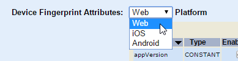
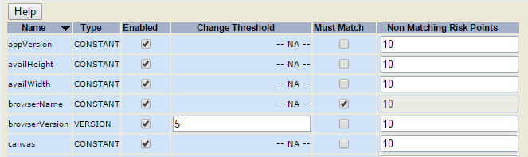

|
IdentityGuard Server 12.0 Administration Guide |
|
IdentityGuard Server 12.0 Administration Guide |
To configure device fingerprint policies for machine authentication
1. Log in to the Entrust IdentityGuard Administration interface as the administrator.
 On the
Windows computer where Entrust IdentityGuard is installed
On the
Windows computer where Entrust IdentityGuard is installed
2. In the main menu, click Policies.
A list of all policies appears on the List Policies tab.
3. Click the name of the policy you want to configure.
4. On the View Policy page, from the Policy Category drop-down list, select Machine Secret.
5. Click Edit Policy.
An editable version of the settings appears.
6. To include a user's device information (collected through your client application) as part of the machine secret, enable the Device Fingerprint Required policy.
7. To specify which device attributes should be used to calculate the device fingerprint, complete the following steps:
Note: Your client application must collect the device attributes that you select.
a. Select a device platform from the Platform drop-down list.

Entrust IdentityGuard displays the list of attributes for the device platform you selected.
By default, all attributes are enabled, and all have a non-matching risk points value of 10.
To understand the values under each column heading in the grid of device attributes, read Characteristics of device fingerprint attributes.

b. Click the check boxes in the Enabled column to clear or select attributes until you have the set that you want to include in the device fingerprint. Your application must collect this attribute from user devices to use it in the device fingerprint calculation.
c. For the attributes for which a change threshold is applicable (those that have a text box in the Change Threshold column), edit the value as required. The change threshold is a number that represents how much the attribute can change from one user authentication attempt to the next without incurring risk. More...
Normal Security Device Fingerprint Risk LimitEnhanced Security Device Fingerprint Risk Limit
The following section provides detailed guidance.
How the change threshold is calculated for each attribute type
d. Clear or select check boxes in the Must Match column, as required.
A check mark indicates that the attribute value obtained during a new authentication attempt must match the value obtained for the last successful authentication attempt. If the attribute does not match, the attribute incurs the number of risk points shown in Non-Matching Risk Points for that attribute. The Non-Matching Risk Points values of each non-matching attribute are added together, resulting in a total risk score. This score is normalized to be out of 100 as follows:
Total Risk Score = (Total Risk Points of Failing Attributes / Maximum Risk Points of All Enabled Attributes) * 100
e. Assign a Non Matching Risk Points value to each attribute, as required.
Initially, all attributes have the same value: 10. You can change the values if you believe that some attributes represent greater risk than others.
For example, browser version might be updated frequently so change in that attribute might represent very little risk. Change in an operating system, however, is rare and may mean that the authentication attempt is coming from a different computer. For this attribute, you might increase the Non Matching Risk Points value.
8. Repeat the previous step for any other device platforms you support.
9. Set the Normal Security Device Fingerprint Risk Limit, which is the maximum total number of non-matching risk points allowed before a user's machine authentication attempt fails. This setting is used if your client application calls for authentication with the Normal security level.
A zero value (the default) means that no risk is allowed and a device fingerprint must exactly match the one used for the last successful authentication.
Note: This value cannot be lower than the value of Enhanced Security Device Fingerprint Risk Limit.
10. Set the Enhanced Security Device Fingerprint Risk Limit. It is like the setting described in the previous step, except that it is used when your client application calls for authentication with the Enhanced security level.
A zero value (the default) means that no risk is allowed and a device fingerprint must exactly match the one used for the last successful authentication.
Note: This value cannot be higher than the value of Normal Security Device Fingerprint Risk Limit.
11. If required, increase the value of the Total Maximum Size in Kilobytes for the machine secret information. This policy sets the maximum storage space (in KB) for each user’s machine secrets, which could include sequence nonce, machine nonce, application data and a device fingerprint. A setting of 0 disables storage of machine secrets, which is equivalent to turning off machine authentication.
12. Edit other Machine Secret or related policies, as required. For descriptions of other policies in this section, see Machine secret policies.
For descriptions of related policies, see Machine secret policies and Risk-Based Authentication policies.
13. Click Save Changes.